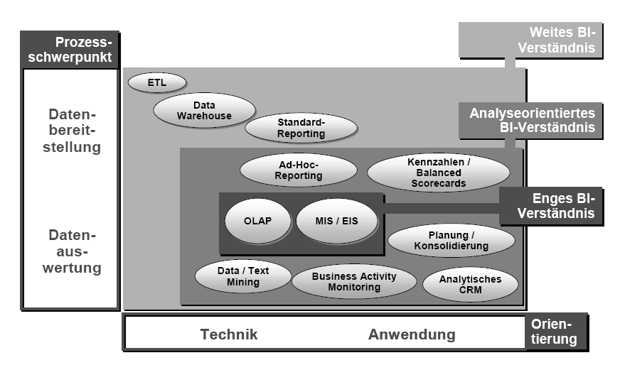
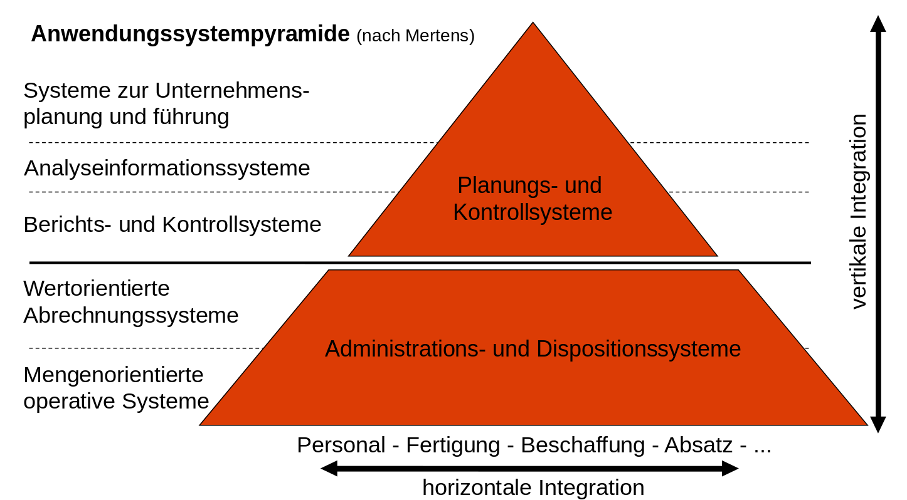
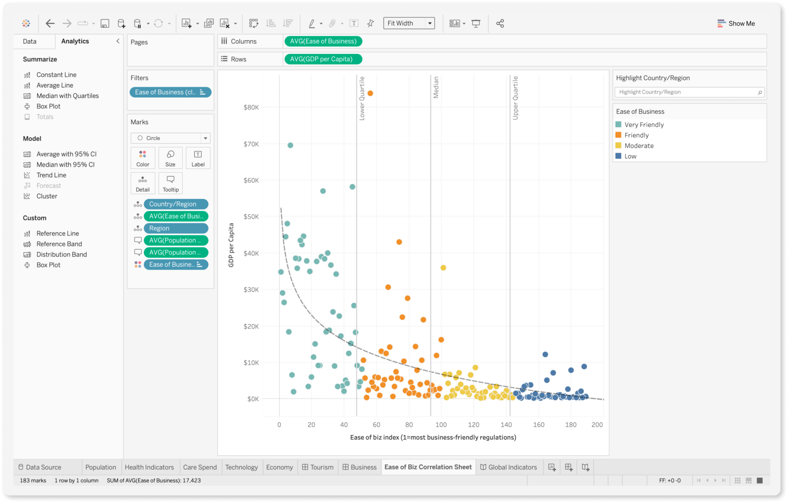
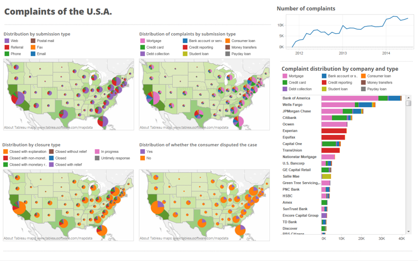
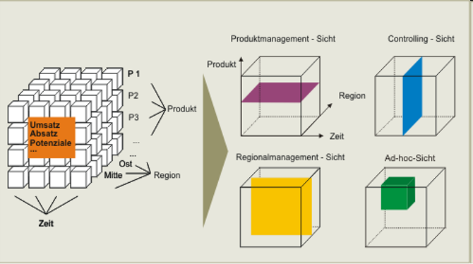
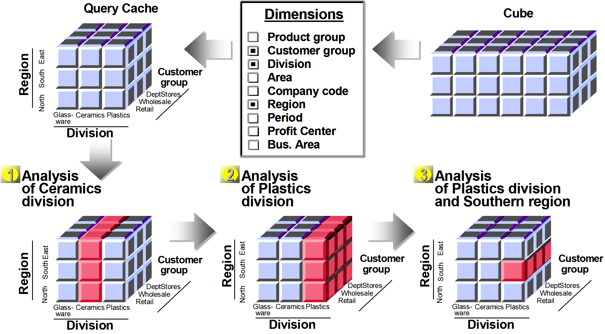
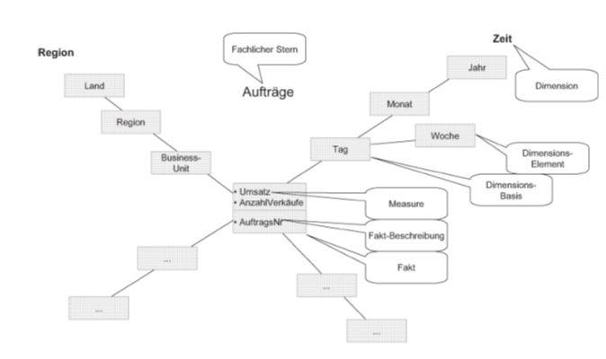
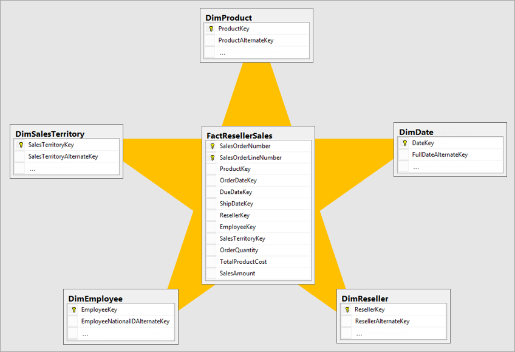
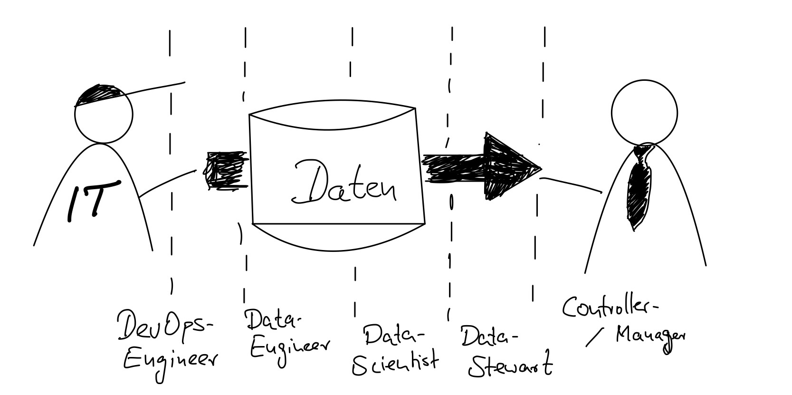

Business Intelligence
Einführung und Motivation
Einführungsvideo: Lufthansa / Teradata
Einführungsvideo: Tableau
Business Intelligence - Problemstellungen
Gliederung - Einführung und Motivation
- Definition
- Architekturen
- Abgrenzung OLTP
- Anwendungen
- Reporting
- Dashboards
- OLAP
- Data Mining
- ...
- Nutzergruppen
- Anwendungsbeispiel: BI bei der Feuerwehr
Definition
Business Intelligence
Begriffliche Klammer, die unterschiedliche Technologien und Konzepte im Umfeld der entscheidungsunterstützenden Systeme zusammenführt und dabei eine entscheidungsorientierte Sammlung und Aufbereitung von Daten über das Unternehmen und dessen Umwelt sowie deren Darstellung in Form von geschäftsrelevanten Informationen für Analyse-, Planungs- und Steuerungszwecke zum Gegenstand hat.
Prozessorientierte Sichtweise
BI ist ein (kontinuierlicher) Prozess, der aus fragmentierten, inhomogenen Unternehmungs-, Markt- und Wettbewerberdaten Wissen über eigene und fremde Positionen, Potenziale und Perspektiven generiert.
Begriffsabgrenzung

Abgrenzung OLTP

Anwendungen

Reporting
Betriebliches Berichtswesen
Ziel: Die Mitarbeiter ereignis- oder zeitgesteuert mit relevanten Informationen versorgen. Es umfasst alle Personen, Organisationseinheiten, Vorschriften, Daten und Prozesse, die bei der Erzeugung und Weiterleitung von Berichten beteiligt sind.
Berichte: Dokumente, die unterschiedliche Informationen für einen bestimmten Untersuchungszweck miteinander kombinieren und in aufbereiteter Form vorhalten.
Zielgruppe sind betriebliche Fach- und Führungskräfte. Sie bekommen in periodischen Abständen oder im Bedarfsfall bestimmte Fakten geliefert, die helfen, Trends zu erkennen, Planungen durchzuführen oder Kontrollaufgaben wahrzunehmen.
Reporting

Reporting

Dashboards

Dashboards

OLAP
Online Analytical Processing
Software-Technologie, die Managern wie auch qualifizierten Mitarbeitern aus den Fachabteilungen schnelle, interaktive und vielfältige Zugriffe auf relevante und konsistente Informationen ermöglichen soll.
Im Vordergrund stehen dabei dynamische und multidimensionale Analysen auf historischen, konsolidierten Datenbeständen.
OLAP
Multidimensionale Perspektiven auf verfügbare quantitative Datenbestände haben sich als geeignet erwiesen, um den Mitarbeitern einen flexiblen und intuitiven Zugang zu den benötigten Informationen zu eröffnen.
Multidimensionalität als zentrales Gestaltungsparadigma:
Betriebswirtschaftlich relevantes Zahlenmaterial simultan entlang unterschiedlicher Klassen logisch zusammengehöriger Informationsobjekte aufgliedern.
Korrespondiert mit der naturgemäß mehrdimensionalen Problemsicht der Unternehmungsanalytiker.
OLAP
Betriebswirtschaftliche Kenngrößen (= Fakten)
- Umsatz
Dimensionen
- Kunden
- Artikel
- Regionen
hierarchische Beziehungen (Navigationspfade, Verdichtungspfade)
Dimensionen entlang derer sich betriebswirtschaftliche Kenngrößen im Zeitablauf untersuchen lassen.
Umsätze pro Monat in den verschiedenen Regionen und Produktgruppen
OLAP

OLAP

OLAP

ROLAP

Data Mining
Allgemein verwendbare, effiziente Methoden, die autonom aus großen Rohdatenmengen die bedeutsamsten und aussagekräftigsten Muster identifizieren und sie dem Anwender als interessantes Wissen präsentieren.
Erforschung von Strukturzusammenhängen (Datenmustern) in Datenbanken
Data Mining
Beispiel:
Entscheidungsbaumverfahren (Klassifizierung)
- Zuordnung von Datenobjekten zu vorgegebenen Klassen
- Es werden Regeln generiert und als Baumstruktur visualisiert, anhand derer sich neue Datenobjekte eindeutig klassifizieren lassen
- Trainings- und eine Testmenge
- leicht zugänglichen Interpretation

Data Mining

Nutzergruppen
Informationskonsument
Rufen zuvor aufbereitete und strukturierte Informationen ab, ohne diese weitergehend analysieren oder nach eigenen Kriterien neu und frei kombinieren zu wollen
Standardisierte Sichten , die in festen Rhythmen aktualisiert werden
Standardberichtswesen, insbesondere Vergleichsdarstellungen mit Abweichungen (z.B. Plan/Ist-Vergleiche) und Zeitreihen (z.B. Trends)
Möglichst einfacher Zugang zu den enthaltenen Informationen
Adressatengerechte Verteilung: Ausgereiftes Berechtigungs- und Rollenkonzept
Analytiker
Nutzt flexible Navigationsmöglichkeiten im verfügbaren Datenraum
Will auch nicht unmittelbar einsichtige Chancen und Risiken für die Unternehmung frühzeitig erkennen
Wünscht stufenweise Disaggregationsmöglichkeiten
Rascher Lösungsbedarf. Graphische Aufbereitung
Black-Box Ansatz: Komplexität der technologischen Gesamtlösung verbergen
Im Einzelfall stellt er Auswertungen auch einem größeren Benutzerkreis zur Verfügung
Spezialist / Poweruser
Spezialistentum bezieht sich sowohl auf die eingesetzten statistischen, mathematischen oder ökonomischen Methoden als auch auf die verwendeten Softwarewerkzeuge
Widmen sich formal komplizierten Aufgabenstellungen und greifen bei der Bearbeitung auf anspruchsvolle Werkzeuge mit weit reichender analytischer Funktionalität zurück
Über aufwändige Korrelationen Ursache-Wirkungszusammenhänge erkennen
Entwirft ggfs. eigene Lösungsverfahren. Kennt Datenstrukturen
Statistiker, Mathematiker oder Informatiker
Herausforderung: Analyseergebnisse derart aufzubereiten, dass diese im Rahmen der Entscheidungsfindung auch genutzt werden können
Zuordnung von BI-Nutzergruppen zu Architekturkomponenten

Rollen in BI-Projekten

Anwendungsbeispiel
Zentrales Ziel der Feuerwehren
Spätesten 13 Minuten nach Brandausbruch sollen die ersten Einsatzkräfte vor Ort sein
- DWH sammelt die Daten vergangener Einsätze
- Daten aus dem Notruf
- Status / GPS-Daten der Fahrzeuge
- Schadensausbreitung
- Unfälle in der Mannschaft
- Geschätzter Sachschaden
- Zeiten für zurückliegende Einsätze darstellen
- Zielerreichung darstellen
- Unterversorgte Regionen identifizieren
- Bau weiterer Feuerwehren: Argumentationsgrundlage gegenüber Stadtrat, Kämmerer
Fragestellungen
- Veränderung der Eintreffzeit durch eine neue Autobahnauffahrt?
- Wie oft wurden Leitern der Feuerwehr eingesetzt, obwohl ein zweiter Fluchtweg vorhanden war?
- Diskrepanz zwischen Brandschutzkonzepten und Realität
- Welchen Einfluss haben Rauchmelder auf die Anzahl geretteter Personen?
- Nachweis der Nützlichkeit von Rauchmeldern
- Verunglücken besonders junge bzw. alte Feuerwehrleute häufiger?
- Auswirkungen auf die Schulung von Feuerwehrleuten
- Welche Gebäudewerte konnten durch die Feuerwehreinsätze gerettet werden?
Anwendungen
- Erstellung von Berichten an die Aufsichtsbehörden
- Dashboards zur Information der Leitung über aktuelle Einsatzverläufe und Zielerreichung
- Vorhersage von Brandereignissen
- Verknüpfung vieler Basisdaten, Beispiel
- Einsatzhistorie
- Bevölkerungsdaten
- Geografische Daten, Infrastruktur, Flächennutzung
- Lebensstandard
- Polizeidaten
- Passende Planung von Einsatzkräften beim Ausrücken und in der Bereitschaft